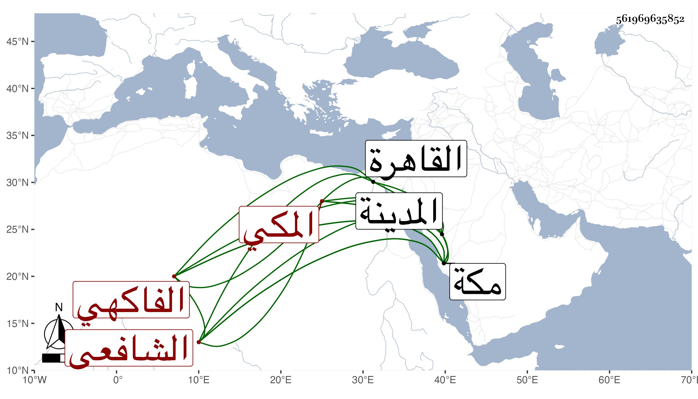

0902Sakhawi.DawLamic.ITO20230111-ara1.EIS1600.561969635852
Biography ID: 561969635852
97
أحمد بن علي بن محمد بن علي بن محمد بن عمر بن عبد الله بن أبي بكر الشهاب بن النور الفاكهي الأصل المكي الشافعي ابن أخت السراج معمر الآتي وأبوه . ولد في شعبان سنة ثمان وستين وثماني مائة بمكة ونشأ بها فحفظ القرآن وأربعي النووي والإرشاد لابن المقري وألفية ابن مالك وعرض على البرهان بن ظهيرة والمحب الطبري والعلمي في آخرين وسمع مني بمكة وبالمدينة أشياء بل قرأ علي بالقاهرة في سنن أبي داود وتكرر قدومه لها وهو حاذق فطن متودد .
